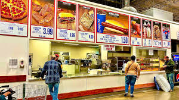

layout css
Show Details
COSTCO PIZZA
Nutrition Facts
Pricing
:max_bytes(150000):strip_icc()/costco-pizza_4x3-e1b31840b3ba4562a3d1093f48bd6c4f.jpg)

Click here for Coscto Link
I love costco pizza! Price & Size
A whole pizza at Costco is 18 inches in diameter.
Flavor365
+2
Pizza Franchise Hub
+2
Cost (as of 2025):
Whole 18″ pizza — about $9.95.
Costco Pizza
+2
Empirecipe
+2
A single slice (cheese or pepperoni) — $1.99.
The Krazy Coupon Lady
+2
Parade
+2
If the whole pizza is cut into 12 slices (common in many locations), that works out to roughly $0.83 per slice
when you buy the whole pie.
Shopfood.com
+2
Empirecipe
+2
Typical Costco pizza toppings offered: cheese or pepperoni.
Parade
+2
Slice Pizzeria
+2
Some locations allow “half-cheese / half-pepperoni” if you order a whole pizza.
Parade
+1
Why the pizza is so yummy
🍴 Nutrition / Serving Info
Costco pizza is pretty indulgent:
Type Calories per slice* Calories per whole 18″ pizza*
Cheese ~710 kcal
Contentful
+2
Costco Pizza
+2
~4,260 kcal
Costco Pizza
+2
Contentful
+2
Pepperoni ~650 kcal
Costco Pizza
+2
Contentful
+2
~3,880 kcal
Costco Pizza
+2
Contentful
+2
* These numbers come from a nutritional facts guide used by Costco.
Contentful
+1
Because the slices are large, just one slice is often more than what you might think — many people find it quite
filling on its own.
✅ Why People Like Costco Pizza
Value for money — $9.95 for an 18″ pizza is very cheap compared to many chain pizzas, especially given its size.
Flavor365
+2
Pizza Franchise Hub
+2
Simplicity and consistency — few topping choices but generally available (cheese or pepperoni); not a lot of
variability means you usually know what you’re getting.
Parade
+1
Convenient after shopping — easy to grab a slice or a whole pie at the food court while you're already at Costco.
Chef's Resource
+1
⚠️ Some Downsides / What to Watch Out For
Limited topping options — unlike many pizzerias, Costco pizza basically just comes in cheese or pepperoni.
Parade
+1
High in calories and fat — a slice is often ~650–710 calories, which adds up fast if you have more than one.
Contentful
+1
Nutritional density — besides high calories, slices are heavy in fat, carbs, and likely sodium (common in big
fast-food–style pizzas).
Jump To Top